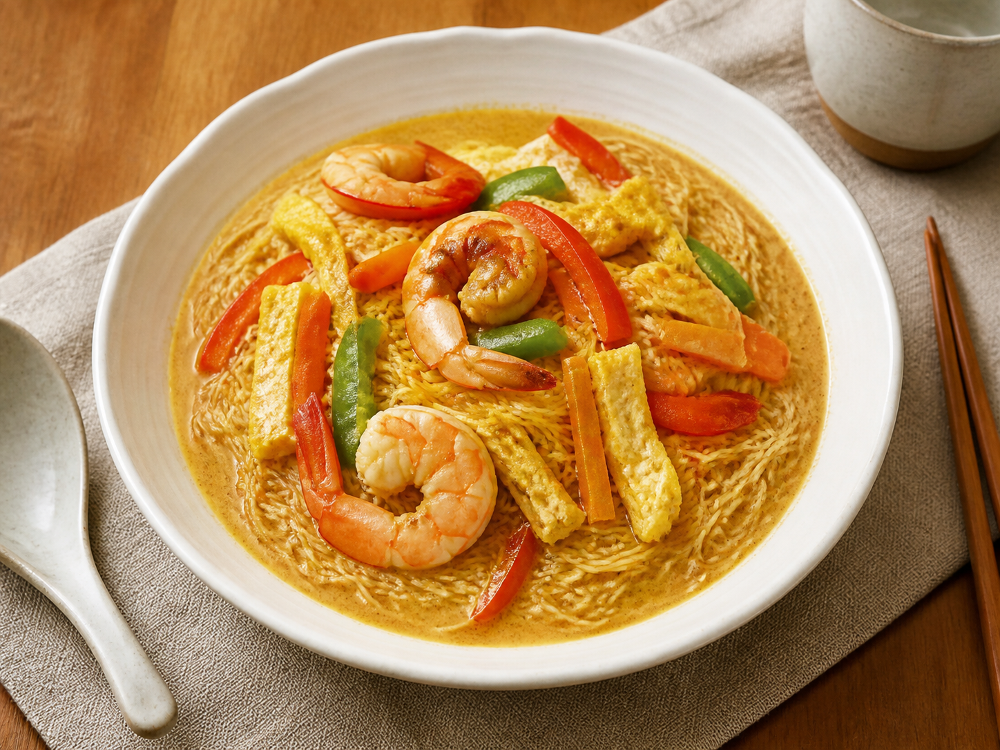

← All recipes
Singaporean · Easy
Singapore Noodles
Bouncy rice noodles with curry, prawns, egg, and crisp vegetables.

Let’s cook
Step by step
Soak noodles according to the packet, drain well, and cut twice with scissors.
Heat 1 tbsp oil in a wok. Scramble eggs until just set; remove.
Add remaining oil and prawns. Cook 2–3 minutes; remove.
Stir-fry pepper and carrot for 2 minutes. Add curry powder and stir 20 seconds.
Add noodles, soy sauce, egg, and prawns. Toss for 2 minutes until evenly yellow and hot.
Read this firstIdiot-proof tip
Drain the noodles thoroughly; excess water dilutes the curry flavour.